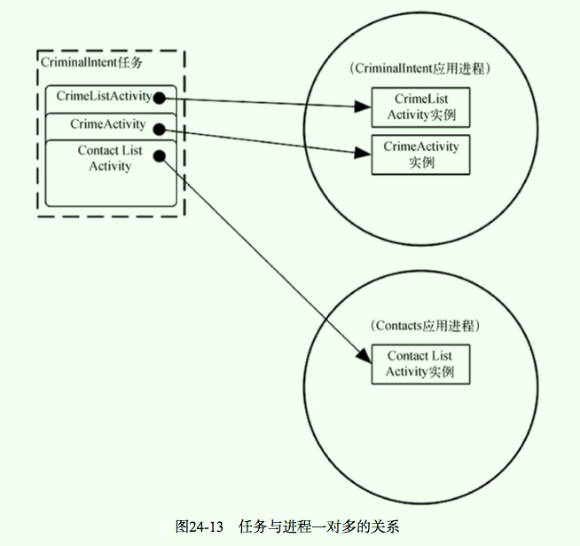
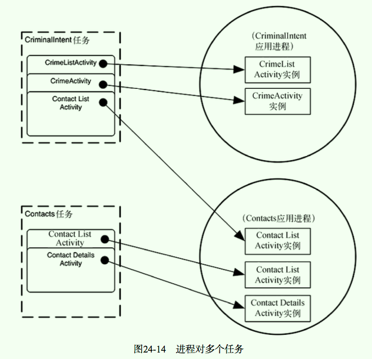

第19章 Android辅助功能
略
第20章 数据绑定与MVVM
20.1 为何要用MVVM架构
MVVM（Model-View-ViewModel）架构很好地把控制器里的臃肿代码抽到布局文件里，让开发人员很容易看出哪些是动态界面；同时，也抽出部分动态控制器代码放入ViewModel类，这大大方便了开发测试和验证；
每个视图模型应控制成多大规模，需要具体情况具体分析，若视图模型过大，还可以继续拆分；都用MVVM架构，但业务不同，场景不一样，每个人的具体实现方法都有差异；
20.2 创建BeatBox应用
之前，UI布局文件及其中的组件，都是使用LayoutInflater类去
inflate()布局文件，之后通过findByID()去将布局实例化后组件对象与控件变量进行关联；现在，通过数据绑定（Data Binding）技术，可以使用DataBindingUtil类去
inflate()布局文件，自动获得XXXBinding对象（Android Stuido自动生成该绑定类，BindingClass），之后通过该XXXBinding对象就可以直接访问UI布局内的组件对象，即通过数据绑定获取视图，省略手动去调用findByID()；在app模块的build.gradle文件里增加以下内容，启用数据绑定；
buildTypes { // 打开IDE的整合功能，允许你使用数据绑定产生的类，并把它们整合到编译 dataBinding { enabled true } }要在布局中使用数据绑定：首先要把一般布局改造为
数据绑定布局，具体做法就是把整个布局定义放入标签中； // 之前：把一般布局 <?xml version="1.0" encoding="utf-8"?> <android.support.v7.widget.RecyclerView xmlns:android="http://schemas.android.com/apk/res/android" android:id="@+id/fragment_beat_box_recycler_view" android:layout_width="match_parent" android:layout_height="match_parent" />// 现在：数据绑定布局 <?xml version="1.0" encoding="utf-8"?> <layout xmlns:android="http://schemas.android.com/apk/res/android"> <android.support.v7.widget.RecyclerView android:id="@+id/fragment_beat_box_recycler_view" android:layout_width="match_parent" android:layout_height="match_parent" /> </layout>：让数据绑定工具处理该布局；数据绑定工具会自动生成一个绑定类（binding class），类名默认以布局文件命名（不是snake_case这种格式，是CamelCase格式）；比如上面的布局文件名为 fragment_beat_box.xml，生成的绑定类类名为FragmentBeatBoxBinding；- 绑定类有一个
getRoot()方法，可以获取布局视图结构的根元素对应的UI对象； - 绑定类还会为布局文件中带android:id标签的元素，自动生成一些属性，引用着对应的UI对象；比如布局文件中id为
fragment_beat_box_recycler_viev的RecyclerView，绑定类自动生成fragmentBeatBoxRecyclerView属性； - 若绑定类没有正常生成，需要重新编译一些项目；
通过数据绑定获取视图：
@Override public View onCreateView(LayoutInflater inflater, @Nullable ViewGroup container, @Nullable Bundle savedInstanceState) { // 绑定类 FragmentBeatBoxBinding binding = DataBindingUtil. inflate(inflater, R.layout.fragment_beat_box, container, false); binding.fragmentBeatBoxRecyclerView.setLayoutManager(new GridLayoutManager(getActivity(), 3)); binding.fragmentBeatBoxRecyclerView.setAdapter(new SoundAdapter(mBeatBox.getSounds())); return binding.getRoot(); }
20.3 导入assets
资源系统（resources system）可以用来打包应用所需的图片、XML文件以及其他非Java资源；
assets是另外一种资源打包方式，其也可以像资源系统那样打入APK包；可以将其看作随应用打包的微型文件系统，支持任意层次的文件目录结构，没有配置管理，无法自动响应屏幕显示密度、语言等设备配置变更，自然也就无法在布局或其他资源里自动使用它们；通常类似游戏这样需要加载大量图片和声音资源的应用使用assets；
resource资源也可以存储声音资源，比如在res/raw目录保存79_scream.wav这样的文件，就可以使用R.raw.79_scream这样的ID获取它，而且还可以根据屏幕显示密度、语言等设备配置使用不同的声音资源；但是这样的话，Android资源系统处理的效率低；
创建assets目录：右键app模块 -> 选择New -> Folder -> Assets Folder，取消Change Folder Location选项，保持Target Source Set为main，即完成创建；之后将声音文件（夹）加入即可；assets目录中的所有文件都是会随着应用打包；
20.4 处理assets
访问assets需要使用AssetManager类，其可以从context中获取到；通常在访问assets时，不用关心究竟使用哪个Context对象，因为所有Context对象的AssetManager管理的都是同一套assets资源；
AssetManager mAssets = context.getAssets();使用assetManager的list(String)方法，能获取assets中的资源清单中，指定目录中的所有文件名；
String[] soundNames = mAssets.list(SOUNDS_FOLDER);
20.6 绑定数据
使用数据绑定，我们还可以在布局文件中声明数据对象
（data、variable）；<layout xmlns:android="http://schemas.android.com/apk/res/android" xmlns:tools="http://schemas.android.com/tools"> <data> <variable name="crime" type="com.bignerdranch.android.criminalintent.Crime"/> </data> .... </layout>之后，使用绑定操作符
@{}，可以在布局文件中直接使用这些数据对象的值；<layout xmlns:android="http://schemas.android.com/apk/res/android" xmlns:tools="http://schemas.android.com/tools"> <data> <variable name="crime" type="com.bignerdranch.android.criminalintent.Crime"/> </data> <!-- 使用crime variable --> <CheckBox android:id="@+id/list_item_crime_solved_check_box" android:checked="@{crime.isSolved()}" android:layout_width="wrap_content" android:layout_height="wrap_content"/> </layout>- 上面的数据绑定（绑定了list_item_sound.xml布局文件中的Sound对象），破坏了责任划分，Sound模型对象不可避免地需要关心显示的问题；
- 为了避免上述问题，引入一种叫作
视图模型的新对象（SoundViewModel），其负责如何显示视图，这种架构称为MVVM；之前，控制器对象格式化提供视图所需要的数据，现在，视图模型对象格式化提供视图所需要的数据； - 并且现在使用了数据绑定，关联数据直接在布局文件里处理；控制器负责初始化布局绑定类和视图模型对象，同时也是它们之间的联系纽带；
- MVVM和数据绑定是独立的；若使用了数据绑定，MVVM更简洁；但是若只使用数据绑定，则会出现模型对象不可避免地需要关心显示的问题，而使用MVVM是可以避免此问题；
使用了数据绑定和MVVM：
<?xml version="1.0" encoding="utf-8"?> <layout xmlns:android="http://schemas.android.com/apk/res/android" xmlns:tools="http://schemas.android.com/tools"> <Button android:id="@+id/list_item_sound_button" android:layout_width="match_parent" android:layout_height="120dp" tools:text="Sound name" android:text="@{viewModel.title}"/> <data> <variable name="viewModel" type="com.example.scott.beatbox.SoundVewModel" /> </data> </layout>@{viewModel.title}：使用了”语法糖“，viewModel.title就是viewModel.getTitle()的简写；- 之后需要创建一个数据对象，将其设置给该布局对应的绑定类；在这里数据对象为SoundViewModel视图模型对象；
- 若数据对象中的数据变化了，最好调用绑定对象的
executePendingBindings()方法，强制立即刷新改变；比如在RecyclerView中需要更新绑定数据；
数据对象中的数据变化了，布局文件是不知道哪些数据变化了、需要刷新；
绑定类是数据对象和布局文件之间的桥梁（数据绑定） ；可以让数据对象的类实现数据绑定的Observable接口，绑定类在数据对象的类上设置监听器，这样，只要数据对象有变化，绑定类立即会收到回调；但该方式工作量过大；- 数据绑定提供了BaseObservable类简化上述操作：
- a. 数据对象的类继承BaseObservable；
- b. 使用
@Bindable注解数据对象中需要监听的属性、get方法； - c. 当数据对象中的数据变化时，手动调用
notifyChange()方法或notifyPropertyChanged(int)方法，通知绑定类，数据对象中的数据已更新，绑定类会再次运行绑定表达式更新视图；
20.7 访问assets
使用File对象是无法打开资源文件，需要使用AssetManager，这样才能得到标准的InputStream数据流（和Java中的InputStream使用方式一样）；
InputStream soundData = mAssets.open(assetPath);有些API需要的是FileDescriptor类（比如SoundPool类），调用AssetManager.openFd(String)可以获取到类型的对象；
String assetPath = sound.getAssetPath(); AssetFileDescriptor assetFd = mAssets.openFd(assetPath); FileDescriptor fd = assetFd.getFileDescriptor();
20.8 深入学习：数据绑定再探
在布局文件里，还可以使用lambda表达式（与Java 8 lambda表达式有些差异）进行回调，比如
android:onClick="@{(view) -> viewModel.onButtonClick()}"；在数据绑定中，可以使用单引号代替双引号，常用于字符串中；而且其还有null自动处理机制，若数据为null会自动转为字符串"null"；比如
android:text="@{`File name: ` + viewModel.title}";数据绑定默认会把绑定表达式解读为属性方法调用；
20.10 深入学习：什么是non-assets
Android有assets和resources两大资源系统；resources资源系统设计有很好的检索机制，但它无法处理图形和声音这样的大资源，这些大资源实际上保存在assets系统中；
在后台，Android就是使用AssetManager类的openNonAssetFd()方法来打开这些大资源的（这些方法对外没有开放，在外面直接使用open()方法）；
第21章 音频播放与单元测试
21.0 概述
- SoundPool能加载一批声音资源到内存中，并支持同时播放多个音频文件；
21.1 创建SoundPool
Lollipop引入新的创建SoundPool的方式：使用
SoundPool.Builder；为了兼容低版本，还可以使用SoundPool(int, int, int)构造方法：- 参数一：同时播放的音频数；
- 参数二：音频流类型，AudioManager类中的常量；Android有很多不同的音频流，它们都有各自独立的音量控制选项；这就是调低音乐音量，闹钟音量却不受影响的原因；STREAM_MUSIC是音乐和游戏常用的音量控制常量；
- 参数三：采样率转换品质（参数不起作用，传入0即可）；
SoundPool mSoundPool = new SoundPool(MAX_SOUNDS, AudioManager.STREAM_MUSIC, 0);
21.2 加载音频文件
使用SoundPool播放前必须预加载音频，SoundPool加载的音频文件都有int类型的ID；注意保存时使用Integer类型而不是int，这样在ID没有值时可以设置为null值；
调用
soundPool.load(AssetFileDescriptor, int)可以把音频文件载入SoundPool中等待播放，返回值为int类型的ID；使用该ID可以方便管理、重播或卸载音频文件；AssetFileDescriptor afd = mAssetManager.openFd(assetPath); // 资源描述对象 int soundId = mSoundPool.load(afd, 1);
21.3 播放音频
- 播放之前需要检查soundId是否为null值，之后调用
soundPool.play(int, float, float, int, int, float)播放音频，参数依次为音频ID、左音量、右音量、优先级（无效）、是否循环播放、速率；最大音量和常速播放的值为1.0，不循环播放值为0，无限循环播放值为-1；
21.4 ~ 21.7 添加测试依赖、创建测试类、实现测试类、编写测试方法
略
21.8 数据绑定回调
和前面使用数据绑定关联数据和UI控件一样，也可以使用lambda表达式，让数据绑定关联点击监听器和按钮；
<Button android:layout_width="match_parent" android:layout_height="120dp" android:onClick="@{() -> viewModel.onButtonClicked()}" android:text="@{viewModel.title}" tools:text="Sound name"/>
21.9 释放音频
- 音频播放完毕后，需要调用
soundPool.release()来释放SoundPool；
21.10 设备旋转和对象保存
当设备旋转时，Activity会被销毁，同时FragmentManager也会销毁与之相关的Fragment；
- 对于基本数据类型、Serializable、Parcelable等
可保存的数据可以使用onSaveInstanceState(Bundle)方法进行保存恢复； - 对于像播放中断进度等
不可保存的数据无法使用onSaveInstanceState(Bundle)方法进行保存恢复；
- 对于基本数据类型、Serializable、Parcelable等
若一个对象重度依赖另一个不可保存的对象，那么这个对象很可能也无法保存恢复；
为了解决由于设备配置发生变化导致fragment被销毁，而且其中的
不可保存的数据无法使用onSaveInstanceState(Bundle)方法进行保存的问题：- fragment提供了setRetainInstance(bool)方法，可以让其在设备配置变化，activity销毁时，fragment不被销毁，进而fragment中不可保存的对象不被销毁；
- fragment的retainInstance属性值默认为false，表示其不会被保留；因此设备配置发生变化时，fragment会随托管activity一起被销毁并重建；
- 在fragment的onCreate()方法中调用
setRetainInstance(true)可保留fragment；
设备配置发生变化时，会销毁fragment的视图、activity的视图、fragmentManager、activity，而fragment则会根据其retainInstance属性值，决定是否保留该fragment；新的activity创建后，新fragmentManager会找到已保留的fragment后会重新创建其对于的视图；
需要销毁与重建fragment的的视图、activity的视图的原因是：新的设备配置可能需要新的资源来匹配，应使用更合适的资源重建视图；
虽然保留的fragment没有被销毁，但是其已经脱离了activity并处于
保留状态（销毁时只销毁fragment的视图，不销毁fragment本身）；fragment进入保留状态必须满足：设置setRetainInstance(true)、设备配置改变导致托管activity正在被销毁；
21.11 深入学习：是否保留fragment
不建议使用保留fragment：
- a. 相对于非保留fragment，保留fragment用起来更复杂，出现问题不容易排查；
- b. 保留fragment只能处理activity因设备旋转销毁的情况；若activity因系统回收内存而销毁，则所有保留的fragment也会随之销毁，数据也就随之丢失；
onSaveInstanceState与setRetainInstance比较：
- onSaveInstanceState默认保存view的状态，并且可以长久保存；
- setRetainInstance无法长久保存，若因系统回收销毁activity，则fragment及相关数据则无法进行恢复；
21.12 ~ 21.13 深入学习：Espresson与整合测试、深入学习：虚拟对象与测试
略
第22章 样式与主题
22.1 颜色资源
颜色资源定义在res/values/colors.xml中；可以应用在视图组件的textColor、backgroundColor等属性上（@color/xxx），也可以被样式资源引用；<resources> <color name="colorPrimary">#3F51B5</color> <color name="dark_blue">#005A8A</color> </resources>
22.2 样式
样式资源定义在res/values/styles.xml中，可以应用在视图组件的style属性，其是一套属性集合；<style name="BeatBoxButton"> <item name="android:background">@color/dark_blue</item> </style><Button style="@style/BeatBoxButton"/>样式支持继承；一个样式能继承并覆盖其他样式的属性；有两种继承方式，一种是NAME加样式名前缀点（表示继承该样式），另一种是使用parent属性指明；
<style name="BeatBoxButton.Strong"> <item name="android:textStyle">bold</item> </style><style name="StrongBeatBoxButton" parent="@style/BeatBoxButton"> <item name="android:textStyle">bold</item> </style>
22.3 主题
主题可看作样式的进化加强版；同样是定义一套属性，
样式属性需要逐个添加，而主题属性则会自动应用于整个应用；定义时的方式和样式一模一样，只是使用时应用在AndroidManifest.xml的application标签的
theme属性上；主题属性能引用颜色这样的外部资源，也能引用其他样式；<application android:theme="@style/AppTheme">主题实际就是一种样式，但是主题指定的属性有别于样式，样式指定的属性仅适用于单个组件
AppCompat库自带三大主题：Theme.AppCompat（深色主题）、Theme.AppCompat.Light（浅色主题）、Theme.AppCompat.Light.DarkActionBar（带深色工具栏的浅色主题）
22.4 添加主题颜色
虽然这主题属性看上去和前面的样式属性差不多，但它们的应用范围不一样；样式属性仅适用于单个组件，主题属性则适用所有使用同一主题的组件；
<style name="AppTheme" parent="Theme.AppCompat"> <item name="colorPrimary">@color/red</item> <item name="colorPrimaryDark">@color/dark_red</item> <item name="colorAccent">@color/gray</item> </style>- colorPrimary：用于设置工具栏的背景色，该颜色也被称为应用品牌色；
- colorPrimaryDark：用于设置屏幕顶部状态栏的背景色，其是深色版colorPrimary；注意，只有Lollipop之后的系统支持状态栏颜色，对于之前的系统，状态栏都是不变的黑底色；
- colorAccent：该颜色应该和colorPrimary形成反差效果，主要给EditTextView这样的组件着色；按钮组件不支持着色；
- 建议这三个主题颜色都一起设置，因为继承自父主题的默认值可能与自己设置的其他主题颜色不搭；
22.5 覆盖主题属性
寻找主题中可以覆盖的属性，需要根据主题的继承关系，一层层向上查询研究该属性的定义，直找到目标为止，没有其他办法；
有些主题有不同的版本（比如v4、v7、v21版本），对应版本有不同的主题属性；且相同的版本在不同的SDK中的定义可能有差异；
有些主题的名称带android:前缀，该前缀不可忽略，这说明该主题包含在Android操作系统中，引用时必须加上命名空间；而不带前缀则说明该资源是应用的一部分，编译项目时工具会引入相关的Java和XML文件；
比如，主题的背景色属性，定义为
<item name="android:colorBackground">@color/background_material_dark</item>，在style.xml文件中覆盖该主题属性即可修改；<style name="AppTheme" parent="Theme.AppCompat"> <!-- Customize your theme here. --> <item name="colorPrimary">@color/colorPrimary</item> <item name="colorPrimaryDark">@color/colorPrimaryDark</item> <item name="colorAccent">@color/colorAccent</item> <item name="android:colorBackground">@color/soothing_blue</item> </style>
22.6 修改按钮属性
通过查看主题的定义，观察到关于按钮的主题属性为buttonStyle（
<item name="buttonStyle">@style/Widget.AppCompat.Button</item>），该属性没有设置值，而是指向了一个样式资源（多个属性）；- 之前覆盖android:colorBackground属性时直接传入了颜色值（只有一个属性）；
现在buttonStyle应该指向另一个样式，且继承于之前的父样式（点击进去之前的样式查看其父样式）并覆盖想要修改的属性；
<style name="AppTheme" parent="Theme.AppCompat"> <!-- Customize your theme here. --> <item name="colorPrimary">@color/colorPrimary</item> <item name="colorPrimaryDark">@color/colorPrimaryDark</item> <item name="colorAccent">@color/colorAccent</item> <item name="android:colorBackground">@color/soothing_blue</item> <item name="buttonStyle">@style/BeatBoxBtn</item> </style> <style name="BeatBoxBtn" parent="Widget.AppCompat.Button"> <item name="android:background">@color/dark_blue</item> </style>
22.7 深入学习：样式继承拾遗
以主题名的形式指定父主题，父子主题都应处于同一个包中，Android操作系统内部主题间的继承、、AppCompat库内部主题间的继承，都可以直接使用主题名继承表示法；若一旦AppCompat库要跨库继承，就一定要明确使用parent属性；
在开发自己的应用时应遵守同样的规则；若是继承自己内部的主题使用主题名指定父主题，若是继承Android操作系统中的样式或主题使用parent属性；
22.8 深入学习：引用主题属性
在引用资源时使用@符号，比如
@color/gray；也可以使用?符号，比如android:background="?attr/colorAccent"，表示使用colorAccent属性指向的资源；也可以使用相关的代码进行引用；Resources.Theme theme = getActivity().getTheme(); int[] attrsToFetch = { R.attr.colorAccent }; TypedArray a = theme.obtainStyledAttributes(R.style.AppTheme, attrsToFetch); int accentColor = a.getInt(0, 0); a.recycle();
第23章 XML drawable
23.0 概述
Android中在屏幕上绘制的东西都可以叫做drawable，比如抽象图形、Drawable类的子类代码、位图图形；
之前使用的BitmapDrawable就是一种drawable；还有其他类型的drawable，比如
state list drawable、shape drawable、layer list drawable，这三种drawable都定义在XML文件中，统称为XML drawable；
23.2 shape drawable
XML drawable和屏幕像素密度无关，无需创建特定像素密度目录，直接将其放入默认的drawable文件夹中即可；可以使用shape drawable将图片变形（比如变为圆形等）、修改颜色等；
// 新建res/drawable/button_beat_box_normal.xml，定义了一个背景为深蓝色的圆形 <?xml version="1.0" encoding="utf-8"?> <shape xmlns:android="http://schemas.android.com/apk/res/android" android:shape="oval"> <solid android:color="@color/dark_blue"/> </shape>// 使用 <style name="BeatBoxBtn" parent="android:style/Widget.Holo.Button"> <item name="android:background">@drawable/button_beat_box_normal</item> </style>
23.3 state list drawable
state list drawable可以解决按钮的不同状态下（如点击状态）的图形显示需求，其会根据按钮的状态，切换指向不同的drawable；注意，默认状态值必须要声明，或者将默认状态放在最后，否则状态设置无效；// 新建res/drawable/button_beat_box.xml，每个item都是shape drawable文件 <?xml version="1.0" encoding="utf-8"?> <selector xmlns:android="http://schemas.android.com/apk/res/android"> <item android:drawable="@drawable/button_beat_box_normal" android:state_pressed="false"/> <item android:drawable="@drawable/button_beat_box_pressed" android:state_pressed="true"/> </selector>// 使用时 <style name="BeatBoxBtn" parent="android:style/Widget.Holo.Button"> <item name="android:background">@drawable/button_beat_box</item> </style>
23.4 layer list drawable
layer list drawable可以将两个XML drawable合二为一；比如，借助此工具可以再添加一个边框；// 修改res/drawable/button_beat_box_pressed.xml， <layer-list xmlns:app="http://schemas.android.com/apk/res/android"> <item> <shape app:shape="oval"> <solid app:color="@color/red"/> </shape> </item> <item> <shape app:shape="oval"> <stroke app:width="4dp" app:color="@color/dark_red"/> </shape> </item> </layer-list>
23.6 深入学习：使用mipmap图像
drawable子目录下的drawable-mdpi、drawable-hdpi等目录针对不同屏幕使用不同的图片；对于确定的屏幕来说，其中一些目录下的图片从来就不会被用到；为了解决此问题，可以针对设备定制APK，如mdpi APK、hdpi APK；
但是针对设备定制APK在某种情况下，需要包含所有分辨率的图片（比如应用启动图标），这时可以将这些图片放在mipmap子目录中，此时mipmap子目录中的资源会被全部打包到APK文件中；建议把应用启动器图标放在mipmap子目录中，其他图片都放在drawable子目录中；
23.7 深入学习：使用9-patch图像
9-patch图像是一种特别处理过的文件，其能够让Android知道图像的哪些部分可以拉伸，哪些部分不可以拉伸；
9-patch图像分成3X3的网格，即有9部分或9 patch组成的网格；网格的角落部分不会被缩放，边缘部分的4个patch只按一个维度缩放，而中间部分则按两个维度缩放；
9-patch图像和普通PNG图像十分相似，只有两处不同：
- 9-patch图像文件名以.9.png结尾；
- 图像边缘具有1像素宽度的边框，该边框用以指定9-patch图像的中间位置；
将.png文件重命名为.9.png文件，打开9-patch工具即可创建修改9-patch图像；
把图像顶部、左边框填充为黑色，分别标记图像的水平方向、竖直方向的可拉伸区域；为让图片更醒目，可勾选上
Show patches选项；图像底部以及右边框定义了9-patch图像的可选的内容区；
- 内容区是绘制内容（通常是文字）的地方；
- 若不标记内容区，则默认与可拉伸区域一样；
- 为让预览器高亮显示图片的文字显示区，可勾选上
Show content选项；
第23章 深入学习intent和任务
24.2 解析隐式intent
可以使用PackageManager获取所有
可启动主activity；可启动主activity都带有包含MAIN操作和LAUNCHER类别的intent过滤器；<intent-filter> <action android:name="android.intent.action.MAIN" /> <category android:name="android.intent.category.LAUNCHER" /> </intent-filter>Intent startupIntent = new Intent(Intent.ACTION_MAIN); startupIntent.addCategory(Intent.CATEGORY_LAUNCHER); PackageManager pm = getActivity().getPackageManager(); List<ResolveInfo> activities = pm.queryIntentActivities(startupIntent, 0);MAIN/LAUNCHER intent过滤器可能无法与通过startActivity()方法发送的MAIN/LAUNCHER隐式intent相匹配；- startActivity()方法表示启动
匹配隐式intent的默认activity，而不是启动匹配隐式intent的activity； - 调用startActivity、startActivityForResult方法发送隐式intent时，操作系统会自动给该intent再添加Intent.CATEGORY_DEFAULT类别；
- 若希望
intent过滤器匹配startActivity()方法发送的隐式intent，则必须在该intent过滤器上添加Intent.CATEGORY_DEFAULT类别；
- startActivity()方法表示启动
定义了
MAIN/LAUNCHER intent过滤器的activity是应用的主要入口点，其只负责作为应用主要入口点要处理的工作，其通常不关心自己是否为默认的主要入口点，所以可以不包含CATEGORY_DEFAULT类别；在PackageManager返回的
ResolveInfo对象中，可以获取activity标签和其他一些元数据，如resolveInfo.loadLabel()方法；List<ResolveInfo> activities = pm.queryIntentActivities(startupIntent, 0); Collections.sort(activities, new Comparator<ResolveInfo>() { @Override public int compare(ResolveInfo o1, ResolveInfo o2) { return String.CASE_INSENSITIVE_ORDER.compare( o1.loadLabel(pm).toString(), o2.loadLabel(pm).toString()); } });
24.3 在运行时创建显式intent
要创建启动activity的显示intent，需要从ResolveInfo对象中获取activity的包名与类名，这些可从ResolveInfo对象的
ActivityInfo对象中获取；之前创建显式Intent，使用
public Intent(Context packageContext, Class<?> cls)方法；该方法会根据传入的参数获取Intent所需要的ComponentName（由包名和类名组成）；也可以自己通过包名和类名创建ComponentName，然后使用
public Intent setComponent(ComponentName component)方法创建显式intent；也可以直接通过包名和类名使用
public Intent setClassName(String packageName, String className)方法创建显式intent，省略创建ComponentName对象了；ActivityInfo activityInfo = mResolveInfo.activityInfo; Intent i = new Intent(Intent.ACTION_MAIN) .setClassName(activityInfo.applicationInfo.packageName, activityInfo.name); startActivity(i);
24.4 任务与回退栈
任务是一个activity栈；栈最底部的activity称为基activity，用户可以看到栈顶的activity；
点击后退键，栈顶的activity会弹出栈外；若当前屏幕上显示的就是基activity，则系统会回到主屏幕；
默认情况下，新activity都会被添加到当前任务中，即使启动的activity不属于当前应用；在当前任务中启动activity的好处是，用户可以在任务内而不是应用层级间进行导航返回；
overview screen（最近任务列表）可以让我们在任务间切换；每个应用显示项就代表着一个应用任务；移除应用显示项就是清除任务，其会从应用回退栈中清除所有activity；
为了在启动新activity时启动新任务，需要为intent添加一个标志
Intent.FLAG_ACTIVITY_NEW_TASK，该标志控制每个activity仅创建一个任务（若任务不存在则新建，若任务存在则切换到原来的任务）；ActivityInfo activityInfo = mResolveInfo.activityInfo; Intent i = new Intent(Intent.ACTION_MAIN) .setClassName(activityInfo.applicationInfo.packageName, activityInfo.name) .addFlags(Intent.FLAG_ACTIVITY_NEW_TASK); startActivity(i);
24.5 使用NerdLauncher应用作为设备主屏幕
给activity的拦截器添加HOME、DEFAULT类别，可以让该activity成为可选的桌面；恢复成系统默认桌面，需要打开Settings进行修改；
<intent-filter> <action android:name="android.intent.action.MAIN" /> <category android:name="android.intent.category.LAUNCHER" /> <category android:name="android.intent.category.HOME" /> <category android:name="android.intent.category.DEFAULT" /> </intent-filter>
24.7 深入学习：进程与任务
对象需要内存和虚拟机的支持才能生存；
进程是操作系统创建的、供应用对象生存以及应用运行的地方；- 进程通常会占用由操作系统管理着的系统资源（如内存等），其还拥有至少一个(可能多个）线程；
- 在Android系统中，每个应用组件（如activity等）都仅与一个进程相关联；
- 一般情况下，应用伴随着自己的进程一起完成创建，该进程同时也是应用中所有组件的默认进程；
每个activity实例仅与一个
任务关联，这时进程与任务的唯一相似之处；进程则包含了应用的全部运行代码和对象；任务只包含activity，这些activity通常来自于
不同的应用进程；打开CriminalIntent应用选择目标联系人，进程、任务示意图：

- 此时按后退键在不同activity间切换，其实是在进程间切换；
打开CriminalIntent应用选择目标联系人，按Home键启动联系人应用，进程、任务示意图：

那些自称为任务终止器的应用，实际上都是进程终止器；
24.8 深入学习：并发文档
在Lollipop设备上，对于以
android.intent.action.SEND、action.intent.action.SEND_ MULTIPLE启动的activity，隐式intent选择器会创建独立的新任务（之前的系统不是这样的，将其添加到当前应用的任务栈中）；这是因为Lollipop中有并发文档（concurrent documents）的概念；有了并发文档，就可以在应用运行时动态创建任意数目的任务；在Lollipop之前，应用任务只能预先定义好，并且还要在manifest文件中明确指定；
Google Drive应用就是并发文档的最好实例，用户可以用它打开并编辑多份文档，这些文档编辑activity都处在独立的任务中；
在Lollipop设备上，若需要启动多个任务，可以采用两种方式：
- a. 给intent加上
Intent. FLAG_ACTIVITY_NEW_DOCUMENT标志，再调用startActivity()方法； b. 在manifest文件中，为activity设置
documentLaunchMode为intoExisting；<activity android:name=".CrimePagerActivity" android:label="@string/app_name" android:parentActivityName=".CrimeListActivity" android:documentLaunchMode="intoExisting" />
- a. 给intent加上
使用上述方法，一份文档只会对应一个任务，若已存（发送带有和已存在任务相同数据的intent）在就不再新建任务；若无论如何都新建任务，就给intent打上
Intent.FLAG_ACTIVITY_NEW_DOCUMENT和Intent.FLAG_ACTIVITY_MULTIPLE_TASK标志、或者修改manifest中的documentLaunchMode为always；